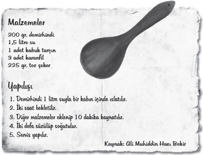

Demirhindi Şerbeti
Demirhindi şerbeti, Osmanlı Padişahlarının pek sevdiği, özellikle de Ramazanda iftar sofralarından eksik etmedikleri bir içecektir. Orijinali kırk farklı baharat ile hazırlanarak yapılır. Özellikle Ramazan döneminde tüketilmesinin sebebi, durma noktasına gelen bazı sistemlerimizin düzenli çalışmasına yardımcı olmasıdır. Günümüzde sadece Ramazan sofralarında bulunduğuna bakmayın, eskiden misafire şerbet ikram edilmezse ayıp olurdu.
